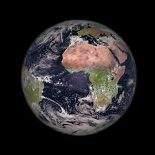
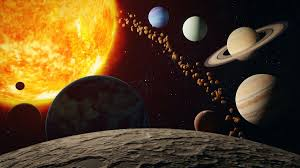
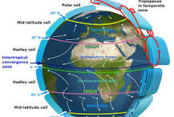

The third planet from the sun, Earth is the only place in the known universe confirmed to host life.
a radius of 3,959 miles, Earth is the fifth largest planet in our solar system, and it's the only one known for sure to have liquid water on its surface. Earth is also unique in terms of monikers.
Orbit around the Sun: Earth orbits around the Sun in an elliptical path. This orbit takes approximately 365.25 days to complete, which we call a year. Earth's orbit is one of the key factors that determine our seasons.
Rotation on its Axis: Earth also rotates on its axis, which is an imaginary line passing through the North and South Poles. This rotation takes about 24 hours to complete, giving us day and night.
Position in the Solar System: Earth is the third planet from the Sun, located in the habitable zone where conditions are just right for life as we know it. It's about 93 million miles (150 million kilometers) away from the Sun.
Galactic Location: In a larger scale, Earth is part of the Milky Way galaxy. The Milky Way is a spiral galaxy, and Earth is situated in one of its spiral arms, known as the Orion Arm.
Motion through the Universe: Earth, along with the entire solar system, is also in motion within the universe. Our solar system orbits around the center of the Milky Way galaxy, and the Milky Way itself moves through space.
Gravitational Interactions: Earth is influenced by the gravitational pull of other celestial bodies, such as the Moon and other planets. These gravitational interactions can cause phenomena like tides on Earth.
Earth's atmosphere is composed of about 78% nitrogen, 21% oxygen, and one percent other gases. These gases are found in atmospheric layers (troposphere, stratosphere, mesosphere, thermosphere, and exosphere) defined by unique features such as temperature and pressure.19 Ọkt 2023
The atmosphere protects life on earth by shielding it from incoming ultraviolet (UV) radiation, keeping the planet warm through insulation, and preventing extremes between day and night temperatures. The sun heats layers of the atmosphere causing it to convect driving air movement and weather patterns around the world.
One of the main components of Earth’s interdependent physical systems is the atmosphere. An atmosphere is made of the layers of gases surrounding a planet or other celestial body. Earth’s atmosphere is composed of about 78% nitrogen, 21% oxygen, and one percent other gases. These gases are found in atmospheric layers (troposphere, stratosphere, mesosphere, thermosphere, and exosphere) defined by unique features such as temperature and pressure. The atmosphere protects life on earth by shielding it from incoming ultraviolet (UV) radiation, keeping the planet warm through insulation, and preventing extremes between day and night temperatures. The sun heats layers of the atmosphere causing it to convect driving air movement and weather patterns around the world. GRADES All SUBJECTS Biology, Earth Science, Geology, Geography, Physical Geography Prevailing Winds MAP Prevailing Winds Geography Globe map of Africa with prevailing winds and convection cells. GRADES All 116 Air Mass ENCYCLOPEDIC ENTRY Air Mass Earth Science, Meteorology, Geography, Mathematics An air mass is a large volume of air in the atmosphere that is mostly uniform in temperature and moisture. Air masses can extend thousands of kilometers in any direction, and can reach from ground level to the stratosphere—16 kilometers (10 miles) into the atmosphere. GRADES 9 - 12+ 74 Air ARTICLE Air Earth Science, Meteorology, Physics Air is the invisible mixture of gases that surrounds Earth. Air contains important substances, such as oxygen and nitrogen, that most species need to survive. GRADES 5 - 8 78 Parts of the Atmosphere ARTICLE Parts of the Atmosphere Chemistry, Earth Science, Astronomy, Meteorology, Geography, Physical Geography We live at the bottom of an invisible ocean called the atmosphere, a layer of gases surrounding our planet. Nitrogen and oxygen account for 99 percent of the gases in dry air, with argon, carbon dioxide, helium, neon, and other gases making up minute portions. GRADES 9 - 12+ 217 Atmospheric Pressure ENCYCLOPEDIC ENTRY Atmospheric Pressure Earth Science, Meteorology, Geography, Physical Geography, Physics The air around you has weight, and it presses against everything it touches. That pressure is called atmospheric pressure, or air pressure. GRADES 5 - 8 114 Aurora ENCYCLOPEDIC ENTRY Aurora Earth Science, Astronomy, Geography, Physical Geography, Physics An aurora is a natural light display that shimmers in the sky. Auroras are only visible at night, and usually only appear in lower polar regions. GRADES 9 - 12+ 101 Barometer ARTICLE Barometer Earth Science, Meteorology A barometer is a tool used to measure atmospheric pressure, also called barometric pressure. GRADES 9 - 12+ 81 Earth ENCYCLOPEDIC ENTRY Earth Earth Science, Astronomy, Geology, Geography, Physical Geography Earth is the planet we live on, the third of eight planets in our solar system and the only known place in the universe to support life. GRADES 5 - 8 421 Greenhouse Effect ARTICLE Greenhouse Effect Earth Science, Meteorology, Geography Global warming describes the current rise in the average temperature of Earth’s air and oceans. Global warming is often described as the most recent example of climate change. GRADES 9 - 12+ 244 The Greenhouse Effect and our Planet ARTICLE LEVELED The Greenhouse Effect and our Planet Biology, Ecology, Earth Science, Geography, Human Geography The greenhouse effect happens when certain gases, which are known as greenhouse gases, accumulate in Earth’s atmosphere. Greenhouse gases include carbon dioxide (CO2), methane (CH4), nitrous oxide (N2O), ozone (O3), and fluorinated gases. GRADES 4 - 12 156 Jet Stream ENCYCLOPEDIC ENTRY Jet Stream Earth Science, Meteorology, Physics Jet streams are currents of air high above the planet. GRADES 5 - 8 78 The Science and Art of Meteorology ARTICLE The Science and Art of Meteorology Earth Science, Astronomy, Meteorology, Geography, Physical Geography Meteorology is the study of the atmosphere. GRADES 9 - 12+ 150 Ozone Layer ENCYCLOPEDIC ENTRY Ozone Layer Health, Earth Science, Geography, Physical Geography The ozone layer is one layer of the stratosphere, the second layer of Earth’s atmosphere. The stratosphere is the mass of protective gases clinging to our planet. GRADES 9 - 12 80 Smog ENCYCLOPEDIC ENTRY Smog Health, Earth Science, Experiential Learning, Geography, Human Geography Smog is air pollution that reduces visibility GRADES 5 - 8 131 Weather ARTICLE Weather Biology, Ecology, Earth Science, Meteorology, Geography, Physical Geography One of the first things you probably do every morning is look out the window to see what the weather is like GRADES 5 - 12+ 195 Kyoto Protocol Signed HISTORIC ARTICLE Kyoto Protocol Signed Health, Social Studies, World History On December 11, 1997, delegates from more than 150 countries signed the Kyoto Protocol, an agreement to lower the amount of greenhouse gases released into the atmosphere. GRADES 6 - 12 24 Atmosphere ENCYCLOPEDIC ENTRY Atmosphere Chemistry, Earth Science, Astronomy, Physics Earth’s atmosphere is so much more than the air we breathe. A trip from the surface of Earth to outer space would result in passing through five different layers, each with very different characteristics. GRADES 5 - 8 284 Ozone Depletion 101 VIDEO Ozone Depletion 101 Conservation, Earth Science, Climatology, Meteorology Far above Earth's surface, the ozone layer helps to protect life from harmful ultraviolet radiation. Learn what CFCs are, how they have contributed to the ozone hole, and how the 1989 Montreal Protocol sought to put an end to ozone depletion. GRADES 5 - 12
Orbital Dynamics: The Earth orbits around the Sun, completing one orbit approximately every 365.25 days. This orbit is not a perfect circle but rather an ellipse, with the Sun at one of the foci. This motion is governed by the gravitational force between the Earth and the Sun, described by Kepler's laws of planetary motion. Moon's Orbit around Earth: The Moon orbits around the Earth, completing one orbit approximately every 27.3 days. This orbit is also elliptical, with the Earth at one of the foci. The gravitational interaction between the Earth and the Moon governs this motion, described by Kepler's laws as well. Phases of the Moon: As the Moon orbits the Earth, the relative positions of the Sun, Earth, and Moon change, causing different portions of the Moon's surface to be illuminated by sunlight. These changing appearances of the Moon, known as lunar phases, include phenomena like the new moon, first quarter, full moon, and last quarter. Tides: The gravitational pull of the Moon and the Sun affects the Earth's oceans, causing tides. The Moon's gravitational force is stronger on the side of the Earth facing the Moon, pulling water towards it and creating a high tide. At the same time, there is a high tide on the side of the Earth opposite the Moon due to the centrifugal force resulting from the Earth-Moon system's rotation around their common center of mass. Eclipses: Occasionally, the Earth, Moon, and Sun align in such a way that one body casts a shadow on another, resulting in eclipses. A solar eclipse occurs when the Moon passes between the Earth and the Sun, blocking sunlight from reaching the Earth. A lunar eclipse occurs when the Earth passes between the Sun and the Moon, casting its shadow on the Moon. Influence on Earth's Environment: The combined effects of the Earth, Moon, and Sun influence various phenomena on Earth, including climate, seasons, and the stability of Earth's axial tilt (which causes variations in daylight and temperature throughout the year).